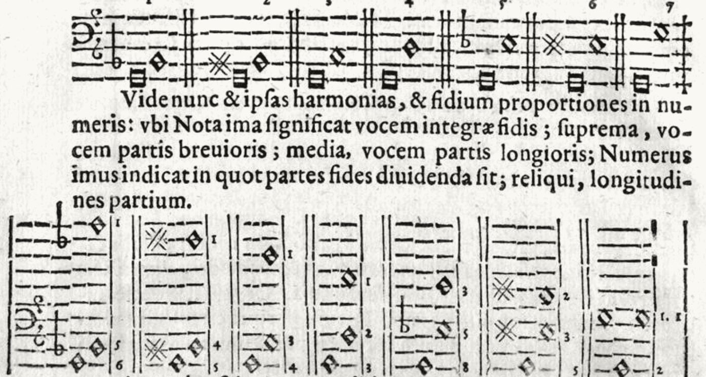
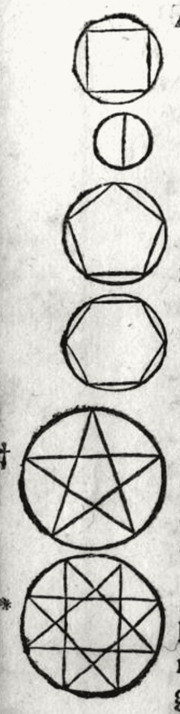

Chapter XII: The Two Treasures of Geometry¶
Geometry possesses two great treasures: the one is the ratio of the hypotenuse to the legs in a right-angled triangle ([I.47]), and the other is the straight line cut in extreme and mean ratio—the Divine Section ([II.11], [VI.30]). The first you may rightly compare to a measure of gold (massa auri); the second we may call a precious jewel (gemma).
For from the first flows the construction of the Cube, the Tetrahedron (Pyramis), and the Octahedron; whereas from the second—self-propagating and ineffable—flows the construction of the Dodecahedron and the Icosahedron (Pacioli 1509).
In Chapter XII, Kepler further links the five regular solids to the divisions of the zodiacal circle and musical consonances, comparing the harmonic monochord division (p. 40) and the inscribed square, diameter, regular pentagon, regular hexagon, five-pointed star pentagram, and eight-pointed star octagram (marginal woodcuts on p. 42) to establish why only specific harmonic divisions govern planetary aspects.



